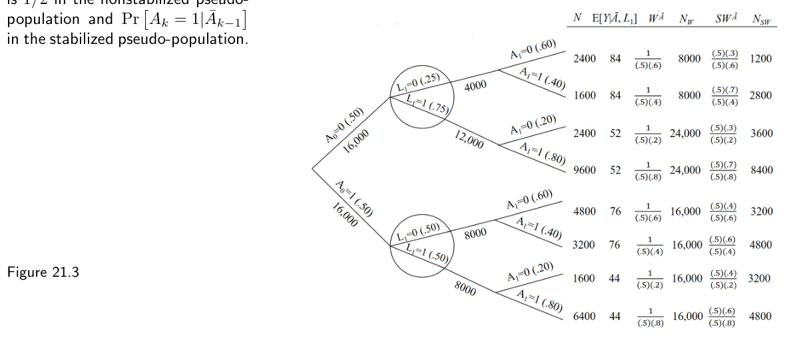
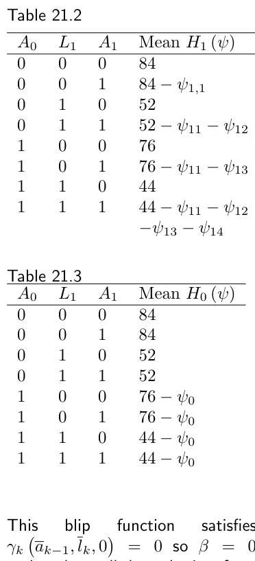
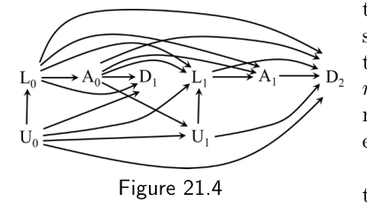

第三部分 · 时变处理的因果推断 · Part III — Causal inference for time-varying treatments
第 21 章 · 时变处理的 g 方法
Hernán MA, Robins JM（2020）. Causal Inference: What If. Chapter 21. 本页为中文全文翻译，附译注。
在上一章，我们描述了一个带有时变处理（time-varying treatment）与处理－混杂反馈（treatment-confounder feedback）的数据集。我们说明，当把传统混杂调整方法用到这份数据时，它们无法正确地调整混杂。尽管这个时变处理对结局的因果效应为零，传统调整方法却给出了偏离零的效应估计。本章给出传统方法在处理－混杂反馈下产生偏倚的解法：使用 g 方法——g 公式、逆概率加权（IP weighting），以及 g 估计，还有它们各自的双重稳健推广。沿用上一章同一份数据，我们在此展示三种 g 方法都能给出正确的（即为零的）效应估计。对于时点固定的处理，我们在第 13 章介绍了 g 公式，在第 12 章介绍了边际结构模型的逆概率加权，在第 15 章介绍了结构嵌套模型的 g 估计。这里我们在第 19 章所述的可识别性条件——序贯可交换性（sequential exchangeability）、可阳性性（positivity）与一致性（consistency）——之下，引入这三种 g 方法，用于比较静态处理策略。
21.1 时变处理的 g 公式
再来看第 20.1 节那个序贯随机化实验（sequentially randomized experiment）的数据，为方便起见，我们把它重列为表 21.1。假如我们只关心时点固定的处理 A1 的效应，也就是说，我们想比较反事实（counterfactual）结局均值 E[Ya1=1] 与 E[Ya1=0]。在第一、二部分我们已说明：在可识别性条件之下，每个均值 E[Ya1] 都是条件于（时点固定的）处理与混杂因素的结局条件均值 E[Y | A1=a1, L1=ℓ1] 的一个加权平均。具体地，E[Ya1] 等于加权平均
这是因为，如上一章所示，只需 L1 就足以让接受处理者（A1=1）与未接受处理者（A1=0）在条件意义下可交换。这个加权平均就是 E[Ya1] 的 g 公式：把均值结局标准化到研究人群中混杂因素（这里只有 L1）的分布上。
可是，在表 21.1 的序贯随机化实验里，处理 A=(A0, A1) 是时变的，而且如上一章所见，存在处理－混杂反馈。这意味着，传统调整方法不可靠，无法无偏地估计时变处理 A 的因果效应。例如，即便在一个序贯可交换性成立的序贯随机化实验中，传统方法也可能无法给出“始终处理”（E[Ya0=1,a1=1]）与“从不处理”（E[Ya0=0,a1=0]）这两种反事实下的均值结局的有效估计。相反，g 公式可以用来计算序贯随机化实验中反事实均值 E[Ya0,a1]。为此，需要把上面那个时点固定处理的 g 公式推广。

Mean Y 为该历史下随访结束时的平均结局。| N | A0 | L1 | A1 | Mean Y |
|---|---|---|---|---|
| 2400 | 0 | 0 | 0 | 84 |
| 1600 | 0 | 0 | 1 | 84 |
| 2400 | 0 | 1 | 0 | 52 |
| 9600 | 0 | 1 | 1 | 52 |
| 4800 | 1 | 0 | 0 | 76 |
| 3200 | 1 | 0 | 1 | 76 |
| 1600 | 1 | 1 | 0 | 44 |
| 6400 | 1 | 1 | 1 | 44 |
在（第 19 章描述的）可识别性条件之下，E[Ya0,a1] 的 g 公式仍然是一个加权平均，只不过现在它是对条件于时变处理以及为达到序贯可交换性所必需的混杂因素的结局均值 E[Y | A0=a0, A1=a1, L1=ℓ1] 取加权平均。权重是已知既往（即对应于所施加干预的既往处理取值）的混杂因素 L1 的分布。具体说，g 公式
等于在（静态）序贯可交换性对 Ya0,a1 成立时的 E[Ya0,a1]。也就是说，对于时变处理，可识别性条件下反事实均值结局的 g 公式估计量，就是把均值结局标准化到研究人群中混杂因素的分布上，表达式里的每一个因子都条件于既往的处理与协变量历史。这种对既往历史的 conditioning（条件化）在时点固定的情形下并不需要，因为那时处理与混杂因素都在单一时点被测量。
只有当对任意满足 f(ℓ1|a0) ≠ 0 的 ℓ1，人群中都存在个体满足 (A0=a0, A1=a1, L1=ℓ1) 时，g 公式才可计算（即定义良好）。这等价于技术要点 19.2 给出的可阳性性定义，也是技术要点 3.1 中关于可阳性性讨论向时变处理的推广。
我们用 g 公式来估计源自表 21.1 序贯随机化实验的因果效应 E[Ya0=1,a1=1] − E[Ya0=0,a1=0]。“从不处理”均值 E[Ya0=0,a1=0] 的 g 公式估计是 84×0.25 + 52×0.75 = 60。“始终处理”均值 E[Ya0=1,a1=1] 的 g 公式估计是 76×0.50 + 44×0.50 = 60。因此因果效应 E[Ya0=1,a1=1] − E[Ya0=0,a1=0] 的估计为 0，与预期一致。传统方法失败之处，g 公式成功了。

理解 g 公式的另一种方式是把它当作一次模拟。在 Y 与 L̄ 联合序贯可交换的条件下，g 公式模拟出：如果研究人群中每个人都遵循处理策略 ā，本应观察到的反事实结局 Yā 与协变量历史 L̄ā。换言之，g 公式模拟（识别）了策略 a 下反事实 Yā, L̄ā 的联合分布。要看到这一点，先看图 21.1 中带因果解释的结构化树图（structured tree graph），它是表 21.1 数据的另一种呈现。在上述可识别性条件之下，g 公式可以看作一个构建新树的步骤：让所有人都遵循策略 ā。例如，图 21.2 中带因果解释的结构化树图展示了“如果所有人遵循‘始终处理’策略（a0=1, a1=1）”本应观察到的反事实人群。

要模拟这个反事实人群，我们（i）给时点 k=0 与 k=1 分别赋以接受处理 a0=1 与 a1=1 的概率为 1；（ii）赋予与原始研究人群相同的 Pr[L1=ℓ1 | A0=a0] 与相同的 E[Y | A0=a0, A1=a1, L1=ℓ1]。有两点很重要。第一，g 公式的取值依赖于我们是否（以及在多大程度上）把 L 纳入。举个例子：假设我们没有收集 L1 的数据，因为我们错误地认为（如图 20.8 中去掉从 L1 指向 A1 的箭头后那样）我们的研究无需 L1。于是我们以为 L1 不是混杂因素，从而识别时不需要它。那么，在没有 L1 数据时，g 公式就退化为 E[Y | A0=a0, A1=a1]，因为没有需要调整的协变量历史。然而，由于我们的研究实际上是由图 20.8 所刻画（在该图下处理分配 A1 受 L1 影响），这个不含 L1 的 g 公式就不再具有因果解释了。
第二，即便 g 公式具有因果解释，它的各个组成部分也可能各自都没有因果解释。举例来说，考虑图 20.9 的因果图，在它之下只有静态序贯可交换性成立。包含 L1 的 g 公式正确地识别了 Ya 的均值。引人注目的是，无论我们是否加上从 A0、A1 指向 Y 的箭头，g 公式作为 E[Yā] 始终保有其因果解释，尽管它的两个组成部分——E[Y | A0=a0, A1=a1, L1=ℓ1] 与 Pr[L1=ℓ1 | A0=a0]——都完全没有任何因果解释。也就是说，Pr[L1=ℓ1 | A0=a0] ≠ Pr[L1a0=ℓ1]，且 E[Y | A0=a0, A1=a1, L1=ℓ1] ≠ E[Ya0,a1 | L1a0=ℓ1]。这两个不等号在图 20.1 与 20.2 所代表的序贯随机化试验中会变成等号。
现在把 g 公式推广到含多个时点 k 的高维情形。g 公式为
其中求和遍历所有可能的 l̄ 历史（l̄k−1 是截至时点 k−1 的历史）。这个对 l̄ 的求和也可以写成 ∑ℓK … ∑ℓ1 ∑ℓ0。在每个时点 k，给定 L̄k、Āk 对 Yā 的序贯可交换性成立时，这个表达式等于处理策略 ā 下的反事实均值 E[Yā]。精细辨析 21.1 给出了“历史”一词更细致的定义。
然而在实践里，如果数据是高维的（正如在带多个混杂因素或多个时点的观察性研究中预期的那样），g 公式的各个组成部分无法被直接计算。量 E[Y | Ā=ā, L̄=l̄] 与 f(ℓk | āk−1, l̄k−1) 需要被估计。例如，我们可以拟合一个线性回归模型来估计随访结束时结局变量的条件均值 E[Y | Ā=ā, L̄=l̄]，并拟合逻辑回归模型来估计每个时点 k≠0 处离散混杂因素 Lk 的分布（L0 的分布可以如第 13.3 节所述无需模型地估计）。这些模型的估计值 Ê[Y | Ā=ā, L̄=l̄] 与 f̂(ℓk | āk−1, l̄k−1) 随后会被代入 g 公式。自第 13 章起，我们把这个估计量称为插入式 g 公式（plug-in g-formula）；当插入式 g 公式里使用的估计值基于参数化模型时，我们称之为参数化 g 公式（parametric g-formula）。
为简洁起见，本章大体聚焦在确定性策略下的 g 公式。不过，在序贯可交换性之下，g 公式也能用来计算随机处理策略 fint 下的反事实结局均值。随机（静态）策略的一个例子是“在每个时点 k 独立地以概率 0.3 处理、以概率 0.7 不处理”，其中 fint(1 | āk−1, l̄k) = 0.3。也就是说，fint(ak | āk−1, l̄k) 是在处理策略下时点 k 给予处理 ak 的条件概率。
更一般地，对于随机处理策略（或干预）fint，g 公式的一般表达式为
注意，如果我们把 fint(ak | āk-1, l̄k) 替换为观测到的处理条件概率 f(ak | āk-1, l̄k)，这就是 Y 的观测均值的公式。这个 g 公式表达式足够一般，既能容纳确定性策略，也能容纳随机策略。在确定性处理策略下，fint(ak | āk-1, l̄k) 对策略规定的 ak 取值总是 1，对其他取值为 0。例如在“从不处理”策略 ā=(0,0,…0) 下，fint(0 | āk-1, l̄k)=1 对所有 k 成立。由于对规定的处理取值 fint 因子为 1、对其余取值为 0，上述公式中就无需包含 fint 因子以及对 ā 的求和。我们公开的软件实现了 g 公式的这个一般表达式，因而能容纳任意处理策略。
21.2 时变处理的 IP 加权
先回顾一下时点固定处理的情形。假使我们只关心表 21.1 中时点固定的 A1 的效应，也就是想比较反事实均值 E[Ya1=1] 与 E[Ya1=0]。正如第 12 章所见，在可识别性条件之下，每个反事实均值 E[Ya1] 都等于由个体特异的非稳定化权重 WA1 = 1/f(A1|L1)（或稳定化权重 SWA1 = f(A1)/f(A1|L1)）所构造的伪人群中的均值 Eps[Y|A1=a1]。通俗地说，IP 权重的分母是某个人在以其混杂因素取值为条件的条件下、实际接受他所接受的那个处理取值的概率。Eps[Y|A1=a1] 则可以由观测数据估计：在伪人群中，取 A1=a1 的那些个体，其 Y 的平均值。
当处理与混杂因素都是时变的时候，时点固定处理的这些 IP 权重就需要推广。对于两个时点上的时变处理 A=(A0,A1) 与时变协变量 L̄=(L0,L1)，非稳定化 IP 权重为
稳定化 IP 权重为
其中按定义 A−1 ≡ 0。通俗地说，时变处理的 IP 权重分母是某个人在以其既往处理与协变量历史为条件的条件下、实际接受他所接受的那段处理历史的概率。
假设我们想比较反事实均值 E[Ya0=1,a1=1] 与 E[Ya0=0,a1=0]。在针对静态策略的可识别性假设下，每个反事实均值 E[Ya0,a1] 都等于由非稳定化权重 WĀ 或稳定化权重 SWĀ 构造的伪人群中的均值 Eps[Y|A0=a0, A1=a1]。也就是说，每个反事实均值的 IP 加权估计量就是伪人群中 A=(A0,A1) 那些个体的 Y 平均值。与技术要点 12.2 中时点固定处理的结果类似，E[Y|A0=a0,A1=a1] 的 IP 加权估计等于 E[WĀY·I(A0=a0,A1=a1)]/E[WĀ]，也等于 E[SWĀY·I(A0=a0,A1=a1)]/E[SWĀ·I(A0=a0,A1=a1)]；对非稳定化与稳定化两个伪人群都成立，而且与序贯可交换性是否成立无关。
现在把 IP 加权用到表 21.1 的数据上。图 21.3 中带因果解释的结构化树图，就是在图 21.1 的树图上另加了非稳定化 IP 权重 WĀ 一列，以及每种处理与协变量历史在相应伪人群中所对应的人数 NW。伪人群的规模是 128 000，即原始人群的 32 000 人乘以 4（静态策略的个数）。由于本研究没有 L0，IP 权重的分母简化为 f(A0)·f(A1|A0,L1)。

WĀ 一列，以及每种处理与协变量历史在伪人群中的人数 NW；伪人群总规模为 128 000。反事实均值 E[Ya0=0,a1=0] 的 IP 加权估计是伪人群中 Eps[Y|A0=0,A1=0]，我们把它估计为伪人群里 32 000 个 (A0=0, A1=0) 个体的平均结局。从图 21.3 的树图读出，这个估计是 84×8000/32000 + 52×24000/32000 = 60。类似地，E[Ya0=1,a1=1] 的 IP 加权估计也是 60。因此因果效应 E[Ya0=1,a1=1] − E[Ya0=0,a1=0] 的估计为 0，与预期一致。IP 加权与 g 公式一样，在传统方法失败的地方成功了。
请注意，我们基于 g 公式得到的 E[Ya0,a1] 非参数估计与基于 IP 加权得到的估计恰好完全相等。这种相等与因果推断毫无关系。也就是说，即便可识别性条件不成立——此时 g 公式与 IP 加权的估计都没有因果解释——两种做法照样会给出同一个数字。（若改用图 21.3 中的稳定化权重 SWĀ，得到的同样是 0；不妨自己验算。在非稳定化伪人群里 Prps(Ak=1|Āk−1,L̄k) 是 1/2，在稳定化伪人群里 Prps(Ak=1|Āk−1) 也是 1/2。）
下面把 IP 加权推广到有多个时点 k=0,1,…,K 的高维情形。非稳定化 IP 权重的一般形式为
稳定化 IP 权重的一般形式为
当可识别性条件成立时，这些 IP 权重构造出一个伪人群，其中（i）Yā 的均值与真实人群中的相同，但（ii）正如第 19 章图 19.1 所示，每个时点 k 的随机化概率要么是常数 1/2（非稳定化权重），要么至多依赖于既往处理历史（稳定化权重）。于是，由于序贯无条件可交换性在两个伪人群中都成立，平均因果效应就是 E[Y|Ā=ā] − E[Y|Ā=ā′]。正文只讨论静态策略；动态策略下的 IP 加权见技术要点 21.2。
在真正的序贯随机化试验中，f(Ak|Āk−1,L̄k) 由设计已知，因此可以保证 E[Yā] 与 E[Yā] − E[Yā′] 的非稳定化 IP 加权估计是无偏的。相比之下，在观察性研究中，f(Ak|Āk−1,L̄k) 需要从数据中估计。当数据是高维的，我们可以例如在每个时点 k 拟合一个 logistic 回归模型来估计二值处理的条件概率 Pr(Ak=1|Āk−1,L̄k)，再用这些模型给出的 f̂(Ak|Āk−1,L̄k) 替换 WĀ 分母中的对应因子。如果这些 f̂(Ak|Āk−1,L̄k) 基于一个错误设定的 logistic 模型，得到的 E[Yā] 与 E[Yā] − E[Yā′] 估计就会有偏。对稳定化权重 SWĀ，分子里的 f̂(Ak|Āk−1) 也要估计；但只要这个估计即使来自错误设定的模型，E[Yā] 与 E[Yā] − E[Yā′] 的估计仍然无偏，只是稳定化伪人群中的 f̂(ak|ak−1) 不再与观测数据密度 f(ak|ak−1) 一致而已。
假使我们用参数化 g 公式得到 E[Yā] 的一个估计，又用参数化模型估计的 IP 权重得到另一个估计，而两者之差超出了抽样变异所能合理解释的范围（这个差值的抽样变异可以用 bootstrap 量化），那么我们就可以断定：g 公式所用的参数化模型、或 IP 加权所用的参数化模型（或两者）存在错误设定。这个结论永远成立，与可识别性假设是否成立无关。它的推论是：应当总是用两种方法都估一遍 E[Yā]，若两个估计相差明显（按某个事先设定的判据），就回头重新检查所有模型，必要时就修改。下一节讲双重稳健估计量如何帮助应对模型错误设定。
另外，正如上一节所讨论的，未知量 E[Yā] 的个数远超样本量的情况并不少见。因此我们需要指定一个模型，把许多策略的信息合并起来，帮助估计某个 E[Yā]。例如，我们可以假设处理历史 ā 对平均结局的效应随累积处理 cum(ā) = ∑k=0K ak 线性增长。这一假设可以写进边际结构均值模型
对所有 ā 成立，它是第 12 章讨论的时点固定处理边际结构均值模型的更一般版本。该模型左端有 2K 个未知量（每个 2K 种策略 ā 各一个），右端却只有 β0、β1 两个未知参数。参数 β1 度量时变处理 Ā 的平均因果效应，而平均因果效应 E[Yā] − E[Yā=0] 等于 β1 × cum(ā)。
如第 12 章所讨论的，为估计边际结构模型的参数，可以在稳定化或非稳定化伪人群中用普通最小二乘拟合线性回归模型
这在数学上等价于在原始研究人群中以 SWĀ 或 WĀ 为权重做加权最小二乘拟合同一个线性模型（在实际数据分析中，这些权重要换成它们的估计值）。在可识别性条件之下，θ1 的加权最小二乘估计对因果参数 β1 一致，而不只是对关联参数 θ1 一致。
β1 的方差——因之也是 E[Yā] − E[Yā=0] 的方差——可以用非参数 bootstrap 估计，也可以通过解析方法计算（后者需要额外的统计分析与编程）。还可以用 β̂1 的稳健方差估计直接构造一个保守的 95% 置信区间，大多数统计软件都会直接输出这个量。对于非饱和的边际结构模型，用 SWĀ 拟合时区间宽度通常比用 WĀ 更窄，所以 SWĀ 权重更受推荐。
当然，如果边际结构均值模型错误设定——也就是说反事实均值结局通过累积处理 cum(ā) 以外的某种时变处理函数依赖于处理策略（例如只依赖最后 5 个月的累积处理 ∑k=K−5K ak），或者以非线性方式（例如二次方式）依赖于累积处理——那么 E[Yā] 的估计就不正确。不过，如果我们用 SWĀ 或 WĀ 拟合模型
那么对联合原假设 θ2 = θ3 = 0 作一个 2 个自由度的 Wald 检验，就是对我们边际结构模型正确设定这一原假设的检验。也就是说，边际结构模型的 IP 加权不受技术要点 21.3 所述 g-零悖论的影响。实践中人们可能会选用把处理历史 Ā 的不同摘要作为协变量、并使用三次样条这类灵活函数的边际结构模型。
最后，如第 12.5 节所讨论的，我们可以用边际结构模型去探索 L0 中某个协变量子集 V 的效应修饰。例如，对一个二值的基线变量 V，我们把边际结构均值模型扩展为
该模型的参数可以用 IP 权重 WĀ、或更好的 SWĀ(V) = ∏k=0K f(Ak|Āk−1,V) / ∏k=0K f(Ak|Āk−1,L̄k) 做加权最小二乘拟合普通线性回归模型 E[Y|A,V] = θ0 + θ1 cum(A) + θ2V + θ3V·cum(A) 来估计。在存在处理－混杂反馈的情形下，V 只能包含基线变量；如果 V 含有 Lk（k>0）的某些分量，那么即使处理在任何时点对平均结局都没有效应，θ1 与 θ3 也可能不等于 0。
21.3 时变处理的双重稳健估计量
第二部分曾简要提到双重稳健方法：它把 IP 加权与 g 公式结合起来。IP 加权要求处理 A 条件于混杂因素 L 的模型正确，g 公式则要求结局 Y 条件于处理 A 与混杂因素 L 的模型正确。双重稳健方法只要求这两类模型中至少有一个正确（而且不必知道是哪一个正确），就能一致地估计因果效应。精细辨析 13.2 描述过一个用于时点固定处理 A 对结局 Y 平均因果效应的双重稳健插入式估计量。本节先回顾一个略有不同的、用于时点固定处理的双重稳健插入式估计量，再把它推广到时变处理。
假使我们想为时点固定的二值处理 A 对二值结局 Y 的平均因果效应 E[Ya=1] − E[Ya=0] 构造一个双重稳健估计量，设定是可交换性、可阳性性与一致性齐备，混杂因素 L 很多。我们将构造如技术要点 13.2 与 13.3 所讨论的 E[Ya] 的双重稳健估计量。E[Ya=1] 与 E[Ya=0] 这两个双重稳健估计量之差，就是平均因果效应的一个双重稳健估计量。我们构造 E[Ya] 的双重稳健过程会用到结局模型 E[Y|A=a,L=l] 的估计值与 Pr[A=1|L] 的模型，然后把两者适当地组合起来。整个过程分三步。
第一步，由处理模型算出预测值 f̂(a|L) ≡ Pr[A=a|L]。第二步，由限制在 A=a 的个体上做极大似然拟合的线性 logistic 模型 Ê(a,L;θ) = expit(θa,0 + θa,1TL + θa,2Ŵa) 算出预测值 Ê[Y|A=a,L] = Ê(a,L;θ̂)，其中协变量包含 Ŵa = 1/f(a|L)。第三步，把 Ê(Ya=1) 与 Ê(Ya=0) 估计为标准化均值 Ê(Ê(1,L;θ̂)) 与 Ê(Ê(0,L;θ̂))，其中 Ê 表示对全部个体（处理与未处理都包括）的样本平均。二者之差 Ê(Ê(1,L;θ̂)) − Ê(Ê(0,L;θ̂)) 就是因果效应 E[Ya=1] − E[Ya=0] 的一个双重稳健估计量。也就是说，在可识别性条件之下，只要处理的模型正确或者结局的模型正确，该估计量就一致地估计平均因果效应。要认识到一点：L 取值相同的处理个体与未处理个体，也有相同的 Ê(1,L;θ̂) = expit(θ̂1,0 + θ̂1,1TL + θ̂1,2/f̂(a=1|L)) 取值；它们同样有相同的 Ê(0,L;θ̂) = expit(θ̂0,0 + θ̂0,1TL + θ̂0,2/f̂(a=0|L))。
现在把这个双重稳健估计量推广到时变处理的设定，我们在其中比较两个处理策略 ā 与 ā′ 下的反事实均值 E[Yā] 与 E[Yā′]。估计 E[Yā] 的双重稳健过程与时点固定处理时一样分三步；不过第二步要复杂一些，因为它需要拟合序贯回归模型。为简化记号，我们只展示如何在"始终处理"策略 ā=1（即 1=1K 是 K+1 个 1 构成的向量）下得到 E[Yā] 的一个双重稳健估计量。
第一步要求拟合回归模型 πk(L̄k;α)，用于 πk = Pr(Ak=1|Āk−1=1k−1, L̄k)，该模型对所有人与所有时点 k 合并拟合。一个人只有在时点 k 之前一直持续接受处理（即 Āk−1=1k−1）时才进入时点 k 的模型拟合。接着我们用该模型的预测值 π̂k=π̂k(L̄k;α̂)，为那些截至 m 时点一直受处理的人（Ām=1m）估计时变 IP 权重 WA^m = ∏k=0m 1/f(Ak|Āk−1,L̄k)，它等于 W1^m = ∏k=0m 1/πk(L̄k)。也就是说，对一个截至 K 时点一直受处理（ĀK=1K）的人，我们在每个时点 m 各赋一个权重 W1^m，而不是像上一节那样只在随访结束时给一个 W1^K。举例来说，若我们为 Pr(Ak=1|Āk−1=1, L̄k) 拟合参数化模型 πk(L̄k;α) = expit(α0,k + α2Lk)，那么在表 21.1 这个 K=1、两个时点的例子中，预测值 Pr(A1=1|A0=1,L̄1) 与 Pr(A0=1|L0) 就是 π̂1 = expit(α̂0,1 + α̂2L1) 与 π̂0 = expit(α̂0,0 + α̂2L0)（因为 A−1≡0）。这里我们用了简写 π̂k 代表 π̂k(L̄k;α̂)。然后我们为截至 m 一直受处理的人计算时变 IP 权重的估计 Ŵ1^m = ∏k=0m 1/π̂k。至此第一步完成。
第二步要求在每个时点 m 各拟合一个结局模型 Êm(L̄m;βm)，从最后一个时点 K 开始，一直倒推到 m=0。时点 m 的回归模型只用截至 m 一直受处理的人来拟合，并把 Ŵ1^m = ŴA^m 作为协变量。时点 K 的模型以 Y 为因变量；m<K 的时点 m 模型则以时点 m+1 模型拟合出的预测值 Êm+1 = Êm+1(L̄m+1;βm+1) 为因变量。对二值 Y，我们可以拟合 logistic 模型 Êm(L̄m;βm) = expit(γmTXm + ςmŴ1^m)，其中 Xm 是协变量 L̄m 的一个向量函数，βm=(γm,ςm)。即使 ÊK 不是一个完整的数，也保证落在 [0,1] 内，因此仍可作为 logistic 模型的因变量。对连续型 Y，可以拟合线性回归模型 γmTXm + ςmŴ1^m。当我们得到预测值 Ê0 = Ê0(L̄0;β̂) 时，第二步完成。
第三步，我们把 E[Yā=1] 的估计算作全体个体 Ê0 的样本平均。如果（i）对所有 m，结局模型 Êm(L̄m;βm) 都正确设定，或者（ii）对所有 m，处理模型 πk(L̄k;α) 都正确设定，那么 Ê[Yā=1] 就是 E[Yā=1] 的（渐近）无偏估计。在这种情况下我们称 Ê[Yā=1] 是双重稳健的。不过，Ê[Yā=1] 实际上是多重稳健的，因为只要对任意 m∈{0,1,…,K−1}，"时点 0 到 m 的处理模型正确且时点 m+1 到 K 的结局模型正确"，它就仍然是 E[Yā=1] 的（渐近）无偏估计。我们把估计量的这个性质称为 K+2 稳健性。技术要点 21.4 与 21.5 解释了这些稳健性质为何成立，并展示了存在比 Ê[Yā=1] 稳健性更好的估计量。事实上，Ê[Yā=1] 就是一个 2K+1 稳健的估计量。要在"从不处理"策略 ā=0（即 0=0K 为 K+1 个 0 构成的向量）下估计 E[Yā]，照上面同样的步骤、令 ā=0 重复一遍即可。各策略下估计均值之差，就是平均因果效应 E[Yā=1] − E[Yā=0] 的多重稳健估计量。
21.4 时变处理的 G-estimation
假使我们只关心表 21.1 中时点固定处理 A1 的效应，那么可以求助于第 14 章所述的结构嵌套均值模型，用它来刻画时点固定处理在协变量各水平内的条件因果效应。那些模型只有一个方程，因为那时只有一个时点 k=0。而推广到时变处理，要求模型给出的方程数与数据中的时点数一样多。对于表 21.1 中两个时点的时变处理 A=(A0,A1)，我们指定一个（饱和的）可加结构嵌套均值模型，含两个方程：
由一致性，时点 k=1 的条件期望可以写成 E[Ya0,a1 − Ya0,a1=0 | L1=l1, A0=a0, A1=a1]。又由于我们假定对 Y 的序贯可交换性，我们可以而且将会（i）把 k=0 的条件期望中的条件事件 A0=a0 去掉，得到 E[Ya0,a1=0 − Ya0=0,a1=0]；（ii）把 k=1 的条件期望中的 A1=a1 去掉，得到 E[Ya0,a1 − Ya0,a1=0 | L1=l1, A0=a0]。
因此，时点 k=1 的方程刻画的是处理在 k=1 的效应——在由 (A0,L1) 定义的 4 种处理与协变量历史各自之内的效应。a1 的效应分别是：在 A0=0, L1=0 的人中为 β11；在 A0=0, L1=1 的人中为 β11+β12；在 A0=1, L1=0 的人中为 β11+β13；在 A0=1, L1=1 的人中为 β11+β12+β13+β14（由一致性，A0=a0 时 L1=La0）。模型的这一部分是饱和的，因为第二个方程中的 4 个参数 β1 参数化了 a1 对 Y 的效应在既往处理与协变量历史的 4 种可能水平中的取值。第一个方程刻画的是：在时点 k=1 的处理被设为 0 的条件下，时点 k=0 处理的效应。模型的这一部分也是饱和的，因为它只有一个参数 β0，用来估计唯一可能历史下的效应（此前既无处理也无混杂因素，所以所有人历史相同）。结构嵌套模型之所以叫"嵌套"，正是因为它有这两个方程。第一个方程刻画的是"在时点 0 接受处理、此后不再接受处理"的效应，第二个方程刻画的是"在时点 1 接受处理、此后不再接受处理"的效应，若有更多时点则依此类推。
现在用 g 估计来估计这个 K=1 的结构嵌套模型的参数。我们沿用第 14 章的做法。先对每个个体 i 写出可加的、秩保持的结构嵌套模型
Yia0,a1 = Yia0,0 + ψ11a1 + ψ12a1La01,i + ψ13a1a0 + ψ14a1a0La01,i
其中第二个方程只限于 A0=a0 的个体。也就是说，第二个方程其实是两个方程，一个针对 A0=1 的个体，一个针对 A0=0 的个体。这使我们能够由一致性把 L1,i 换成 La01,i——当像图 19.6 那样我们对 L1 并不具备序贯可交换性时，从观测数据识别模型参数需要这一步。我们用 Yi0,0 来代表 Yia0=0,a1=0，以简化记号。（这里没有写出个体下标 i。）
第一个方程是秩保持的，因为效应 ψ0 对每个个体都完全相同。于是若受试者 i 的 Yi0,0 超过受试者 j 的 Yj0,0，同样的 i 与 j 的排序在 Yi1,0 上依然成立——模型在各个策略之间保持秩。另外，在方程 2 之下，若 Yi1,0 超过 Yj1,0，我们只有当两人具有相同的 A0,i 取值 a0 与相同的 L1,i=La01,i 取值 l1 时，才能确定 Yi1,1 也超过 Yj1,1。由于秩的保持是以局部因素（即 La01=l1 的取值）为条件的，我们把第二个方程称为条件（局部）秩保持模型。
如第 14 章所讨论的，由于存在未测量遗传与环境风险带来的个体异质性，秩保持假定在生物学上是不可信的。因此我们主要关注的是结构嵌套均值模型——它对"是否存在因未测量因素导致的个体间附加效应异质性"完全不作断言。但在给定对 Y 的序贯可交换性的前提下，下面描述的一类秩保持模型的 g 估计量（ψ̂）即使在秩保持模型错误设定的情况下，也对均值模型的参数 β 一致。
g 估计的第一步是把模型与观测数据联系起来，这一点与第 14 章对时点固定处理所做的相同。注意，由一致性，对那些恰好接受了处理取值 a0 与 a1 的个体，反事实结局 Ya0,a1 等于观测结局 Y。形式化地说，对满足 (A0=a0, A1=a1) 的个体有 Ya0,a1 = YA0,A1 = Y。类似地，对满足 (A0=a0, A1=0) 的个体有 Ya0,0 = YA0,0，而对 A0=a0 的个体有 La01 = L1。现在可以把结构嵌套模型改写成观测数据的形式：
Y0,0 = YA0,0 − ψ0A0
g 估计的第二步是用观测数据算出候选反事实 H1(ψ†) 与 H0(ψ†)。做法是把结构嵌套模型中的真值 ψ 换成某个取值 ψ†：
H0(ψ†) = H1(ψ†) − ψ0†A0
与第 14 章一样，目标是找到参数取值 ψ† 使之等于真值 ψ。当 ψ†=ψ 且 Ak−1=ak−1 时，候选反事实 Hk(ψ†) 等于真反事实 Yak−1,0k——即在 k−1 及之前都按处理 ak−1、此后按处理 0 的策略下的结局。现在我们可以用序贯可交换性在每个时点做 g 估计。精细辨析 21.3 说明了如何 g 估计这个饱和结构嵌套模型的参数 ψ。结果是该结构嵌套模型的所有参数都为 0，这意味着任意静态或动态策略 g 下的反事实均值 E[Yg] 都等于 60。这个结果与 g 公式和 IP 加权所得一致。g 估计与 g 公式、IP 加权一样，在传统方法失败之处成功了。

H1(ψ) 在 8 种处理与协变量历史下的样本均值，用于估计参数 ψ11、ψ12、ψ13、ψ14。
H0(ψ) 在 8 种处理与协变量历史下的样本均值，用于估计参数 ψ0。不过在实践中，我们会遇到带多个时点 k、且每个时点都有多个协变量 Lk 的观察性研究。一般而言，结构嵌套均值模型的方程数与数据中的时点数一样多，即 k=0,1,…,K。正文讨论的结构嵌套均值模型最一般的形式如下（更一般的形式见技术要点 21.13）。对每个时点 k=0,1,…,K，
其中 ak−1, ak, 0k+1 是一个静态策略：在 0 到 k−1 时点赋处理 ak−1，在时点 k 赋处理 ak，从 k+1 直到随访结束 K 赋处理 0。策略 ak−1,ak,0k+1 与 (ak−1,0k) 的唯一区别是：前者在时点 k 有处理 ak，后者在时点 k 为 0。这里每个 γk(ak−1,lk,ψ†) 都是参数向量 ψ† 的已知函数，且 γk(ak−1,lk,ψ†)=0；β 是 ψ† 的真值。同样在对 Y 的序贯可交换性下，我们可以把条件事件中的 Ak=ak 去掉。在我们 K=1 的例子中，γ0 就是 β0（l0 与 a−1 都可以取为恒等于 0），γ1 是 β11+β12l1+β13a0+β14a0l1。于是，结构嵌套均值模型就是这样一个模型：它把"在时点 k 处最后给一次大小为 ak 的处理闪（blip）"对 Y 的均值的效应，作为既往处理与协变量历史 ak−1,lk 的函数 γk(ak−1,lk,β) 来刻画。结构嵌套模型与边际结构模型之间的关系见技术要点 21.7。
现在可以讨论一般的、结构嵌套均值模型（其闪函数为 γk(ak−1,lk,β)）的参数估计了。为说明我们的估计过程，我们要用到一个事实：正确设定的局部秩保持模型（真参数为 ψ）同时也是一个正确设定的结构嵌套均值模型（真参数为 β=ψ）——反之则不然。给定结构嵌套均值模型，我们可以定义
正确设定的、真参数向量为 ψ 的局部秩保持模型，等价于断言 Hk(ψ) 恰好等于反事实 YAk−1,0k——即把时点 j 到 K 的处理效应都剔除之后的 Y。特别地，H0(ψ) 是不接受任何处理时的 Y0。然而，如果局部秩保持假定不成立（只要处理有效应，这几乎总是如此），但结构嵌套均值模型是对的，我们仍有 E[Hk(β)|Ak,Lk] = E[YAk−1,0k|Ak,Lk] 以及 E[H0(β)] = E[Y0]。因此，只要我们能拿到 β 的一致估计量 β̂，E[Y0] 就可以用 H0(β̂) 的样本平均一致地估计。这正是 g 估计所提供的。
当有多个时点或协变量时，我们需要拟合一个非饱和的结构嵌套均值模型。例如，我们可以假设函数 γk(ak−1,lk,β) 对所有 k 都相同。最简单的模型是 γk(ak−1,lk,β) = β1，它假定最后一次处理闪的效应与所有既往历史、所有时点 k 都无关。其他选择还有 β1 + β2k（假定效应随处理时点 k 线性变化），以及 β1 + β2k + β3ak−1 + β4lk + β5lkak−1（允许时点 k 的处理效应被最近一次的处理与协变量取值修饰）。
为描述多个时点下结构嵌套均值模型的 g 估计，假设非饱和模型是 γk(ak−1,lk,β)=β1。相应的秩保持模型意味着 Hk(ψ†) = Y − ∑j=kK Ajψ†，对任意取值 ψ† 都可以从观测数据算出。我们随后选取 ψlow 与 ψup，它们分别比 ψ 的任何实质性可能取值小得多、大得多，并在从 ψlow 到 ψup 的一个网格上（比如 ψlow, ψlow+0.1, ψlow+0.2, …, ψup）为每个 ψ† 计算每个个体、每个时点的 Hk(ψ†) 取值。然后，对每个 ψ†，我们拟合一个在时间上合并的 logistic 回归模型
用于 k=0,…,K 各时点处理的概率。这里 Wk = wk(Lk,Ak−1) 是由个体的协变量与处理数据 Lk,Ak−1 计算出的一个协变量向量，α2 是一行未知参数，每个人贡献 K+1 条观测。β 的 g 估计就是使 α1 的估计最接近 0 的那个网格值 ψ†。我们可以用另一种方式免去网格搜索：把估计 β̂ 定义为使 α1=0 的得分检验 p 值等于 1 的那个 ψ† 取值。也就是说，β̂ 是下式的解：
其中 α̂0 与 α̂2 由把上面 logistic 模型中的 α1 项设为 0 后拟合得到。标准的方程求解器即可使用。若（i）结构嵌套均值模型正确，（ii）对 Y 的序贯可交换性成立，（iii）模型 logit Pr(Ak=1|Lk,Ak−1) = α0 + α0Wk 正确，（iv）Hk(ψ†) 以线性形式（即作为 Hk(ψ†) 本身而非 Hk(ψ†)2 或任何其他非线性函数）进入上述 logistic 模型（见技术要点 14.2），则估计量 β̂ 一致。ψ 的 95% 置信区间就是使检验 α1=0 时 p 值 >0.05 的那组 ψ† 取值的上下限。
上述过程就是第 14 章 g 估计程序向时变处理的推广。为简单起见，我们考虑的是只有单参数 β1 的结构嵌套模型，这意味着效应不随时点 k 变化、也不随处理与协变量历史变化。现在假设参数 β 是向量。具体地说，考虑模型 γk(ak−1,lk,β) = β0 + β1k + β2ak−1 + β3lk + β4lkak−1，此时 β 是五维的、lm 是一维的。要估计 5 个参数，就需要在处理模型中放入 5 个额外的协变量。例如我们可以拟合模型
协变量的具体选择不影响 β 点估计的一致性，但决定了其置信区间的宽度。前面的 g 估计过程于是需要在 5 维网格上搜索，每个 βj 分量一维。如果每个分量取 20 个网格点，5 维网格上就有 205 个 β 取值。当 β 的维数大于 2 时，用网格搜索找 g 估计 β̂ 在计算上会很困难。这种情况下我们同样可以免去网格搜索：把 β̂ 定义为使 α1−5 = (α1,…,α5) = 0 的得分检验 p 值等于 1 的那个 ψ† 取值。也就是说，β̂ 是下面这个五维估计方程的解：
其中 α̂0 与 α̂6 由把 α1−5 设为 0 后拟合上述 logistic 模型得到。标准方程求解器即可使用。事实上，当结构嵌套均值模型对 β 线性时——正如本节讨论的所有例子——上式的解 β̂ 有闭式表达，见技术要点 21.8（该处也给出了估计量的多重稳健形式）。βj 的 95% 联合置信区间，是使 5 自由度的得分检验在 5% 水平上不拒绝的那组取值。计算量更小的替代做法是单变量 Wald 置信区间 β̂j ± 1.96×标准误。
一旦拿到结构嵌套均值模型参数的一致 g 估计量 β̂，最后一步就是估计所关心策略 g 下的反事实均值 E[Yg]。如前所述，E[Y0] 可以用 E[H0(β̂)] 的样本平均一致地估计。若不存在由既往协变量历史引起的效应修饰，即 γk(ak−1,lk,β) = γk(ak−1,β)，则静态策略 a 下的 E[Ya] 估计为
另一方面，如果结构嵌套均值模型依赖于 Lk，或者我们想估计动态策略 g 下的 E[Yg]，那就需要用技术要点 21.9 所述的算法来模拟 Lk。
21.5 删失是一种时变处理
你也许需要重读第 12.6 节以复习删失。本章迄今为止使用的例子中没有删失：表 21.1 中所有个体的结局都是已知的。但在实践中，我们常常会遇到这样的情形——部分个体失访，于是他们的结局取值未知或被（右）删失。我们在第二部分讨论过删失及处理它的方法。第 8 章说明删失可能引入选择偏倚，即便在零假设下也是如此；第 12 章讨论了我们一般感兴趣的是"若研究人群中无人被删失"的因果效应。
然而在第二部分，我们只考虑了一个大为简化的删失版本：我们没有指定个体是在随访的哪个时点被删失的。也就是说，我们把删失 C 当作时点固定的变量。看待删失更现实的方式，是把它看作时变变量 C1, C2, …, CK+1，其中 Cm 是一个指示变量：个体在时点 m 仍未被删失时取 0，否则取 1。删失是一种单调型的缺失数据：若个体的 Cm=0，那么此前所有删失指示也都为 0（C1=0, C2=0, …, Cm−1=0）。此外，按定义，研究中所有个体都有 C0=0；否则他们就不会被纳入研究。
如果个体在时点 m 被删失，即 Cm=1，那么在时点 m 之后测量的处理、混杂因素与结局都是未观测到的。因此，分析必然被限制在未删失的人时（person-time）上，即 Cm=0。例如，21.1 节的反事实均值 E[Yā] 的 g 公式需要改写为
其中所有项都以"保持未删失"为条件。假使可识别性条件在所有时点 m 上把处理 Am 换成 (Am, Cm+1) 后依然成立，那么容易证明上面这个表达式正是联合处理 (ā, c̄=0̄) 下反事实均值 E[Yā,c̄=0̄] 的 g 公式，也就是"若所有人都接受了处理策略 ā、且没有任何个体失访"本应观察到的平均结局。反事实均值 E[Yā,c̄=0̄] 也可以在针对联合处理 Ā,C̄ 的可识别性条件成立时，用结构均值模型的 IP 加权来估计。为此，我们可以例如在由非稳定化 IP 权重 WĀ × WC̄ 构造的伪人群上拟合结局回归模型
其中
我们通过拟合 Pr(Ck=0|Ck−1=0, Āk−1, L̄k−1) 的 logistic 回归模型来估计权重的分母。技术要点 21.10 给出到以失效时间为结局的生存分析的推广。
在由非稳定化 IP 权重构造的伪人群中，被删失的个体被具有相同处理与协变量历史取值的未删失个体的副本所替代。因此伪人群的规模与删失之前（即任何失访发生之前）的原始研究人群相同。非稳定化 IP 权重在伪人群中取消了删失。或者，我们也可以使用由稳定化 IP 权重 SWĀ × SWC̄ 构造的伪人群，其中
我们用两个独立的模型分别估计 IP 权重的分子与分母：一是 Pr(Ck=0|Ck−1=0, Āk−1, L̄k−1)，二是 Pr(Ck=0|Ck−1=0, Āk−1)。（记住：若 Pr(Ck=0|Āk−1,Ck−1=0,L̄k) 的模型正确设定，估计的 IP 权重 SWC̄ 均值为 1。）

D1, D2 表示的生存分析因果图，删失指示变量已略去。严格地说，每个 Dk 都应有箭头指向图上所有后续变量，此处为简洁省略。由稳定化 IP 权重构造的伪人群，其规模与删失之后的研究人群相同，即伪人群中每个时点 k 被删失个体的比例与研究人群相同。稳定化权重并不在伪人群中消除删失，它们让删失在每个时点 k 相对于已测量的协变量历史 L̄k 是随机发生的。也就是说，有选择，但没有选择偏倚。无论使用哪一种 IP 权重，伪人群中都没有从 Lk 与 Ak 指向 m>k 的未来 Cm 的箭头。重要的是，在针对联合处理 Ā,C̄ 的可交换性条件下，即使 L̄ 的某些分量受既往处理影响，IP 加权仍能无偏地估计 Ā,C̄ 的联合效应。
最后，用结构嵌套模型的 g 估计时，我们首先必须用 IP 加权来调整删失带来的选择偏倚。在实践中，这意味着先估计删失的非稳定化 IP 权重 WC̄，构造出一个无人被删失的伪人群，然后在这个伪人群上做 g 估计。
21.6 大 g 公式
本章以及前两章偏重于那些依赖"给定已测量协变量 L 的序贯可交换性"并由 g 公式来识别的方法。理由是，在实践中，对复杂纵向数据的因果分析很少依赖其他识别条件与识别公式。例如，以"前门公式（front door formula）为识别公式"的那套识别条件为基础的现实应用就很少见。然而，撇开实质上的合理性与实际应用不谈，不同的识别条件及其公式，在数学上都与"基于所有变量——无论已测量还是未测量——的序贯可交换性和 g 公式"相连，下面我们就来说明这一点。
当给定已测量协变量 L 的序贯可交换性成立时，我们已经讨论过基于已测量时变协变量 L 的 g 公式如何识别时变处理 A 对结局 Y 的因果效应。现在假使我们手上有一张因果 DAG，其中既有观测变量 A、L、Y 也有未观测变量 U，而已测变量 L 不足以达到序贯可交换性。
对任何一张因果 DAG，把已测量与未测量变量合起来 X=(L,U)，就能保证（联合）序贯可交换性——因为任一处理变量的任一父节点都包含在 A 或 X 之中。因此，如果因果图上每个变量都被测量了、且可阳性性成立，那么基于 X 的 g 公式就能识别任意处理策略 g 下的反事实均值 E[Yg]。我们把把 L 换成 X 之后的 g 公式称为大 g 公式（the big g-formula），因为它并不单纯基于观测数据。
给定一张因果 DAG、处理 Ā 与结局 Y、一个处理策略 g，以及事实变量（factuals）A、L、Y、U，我们可以显式写出 Yg 的分布（密度）的大 g 公式。大 g 公式只依赖事实变量 A、L、Y、U 的分布。（我们把 A、L、Y、U 称为"事实变量"是为了与反事实相区分。事实变量是真实世界中存在的变量；与观测变量不同，有些事实变量——比如 U——在数据分析中是拿不到的，常常是因为它们没有被测量。）大 g 公式是在任意处理策略下识别反事实密度的正确公式，但大 g 公式在实践中无法使用，因为它含有未测量变量。于是有一个有趣的数学问题：大 g 公式能否被化简成观测数据 A、L、Y 联合分布的某个泛函？如果能，我们就有了一个新公式，它（i）复现大 g 公式的结果（因而是一个正确公式），同时（ii）只用观测变量的分布写成（因而是一个能用于数据分析的公式）。
例如，在被称为前门准则的那套识别条件下，E[Ya] 的大 g 公式可化简为一个只含观测变量的公式——前门公式（证明见技术要点 21.11）。因此，前门公式是图 7.14 因果图所蕴含的前门假设下 E[Ya] 均值的一个有效公式。
更一般地，我们希望能够回答以下两个问题。第一，我们能否总是判断出：大 g 公式可以在不引入任何超出"关于 (A,L,Y,U) 的联合分布服从因果 DAG 所蕴含的 d-分离关系"这一假定之外的新假定的前提下，被改写成一个只依赖观测变量 (A,L,Y) 分布的公式？第二，当第一个问题的答案为肯定时，我们能否显式地把这样一个识别公式写出来？这两个问题的答案都是肯定的。
重要的是，这些纯粹是关于"服从 DAG 上由 d-分离刻画的一定的独立性关系的 (A,L,Y,U) 分布之性质"的数学问题。也就是说，这两个问题既不涉及反事实，也不涉及因果。与因果的唯一联系，是"DAG 是一张因果 DAG"这一断言。如果确实如此，大 g 公式就有因果解释；如果不是，肯定的答案虽然依然成立，却没有因果含义。当然，在观察性分析中，我们永远无法确定我们猜想的那张图确实是一张因果图。